W ramach działalności szkoleniowej prowadzimy następujące szkolenia-kursy:
1. Drwal - operator pilarki. Kurs realizowany jest na podstawie programu opartego na Zarządzeniu Nr 41/1998 Dyrektora Generalnego Lasów Państwowych z dn. 2 lipca 1998r. i obejmuje 140 godzin w tym 100 godz. zajęć praktycznych. Zajęcia prowadzone są przez instruktora zweryfikowanego przez Lasy Państwowe. Kursanci w trakcie szkolenia otrzymują: materiały szkoleniowe, środki ochrony osobistej (z wyjątkiem obuwia), pilarki, paliwo i oleje oraz inne narzędzia wykorzystywane w trakcie pracy drwala. Zgodnie z przyjętym programem w kursie mogą uczestniczyć pełnoletnie osoby, które ukończyły co najmniej szkołę podstawową.
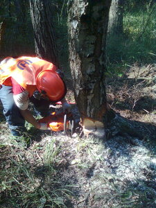
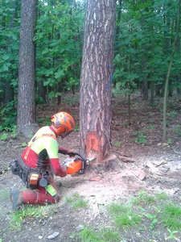
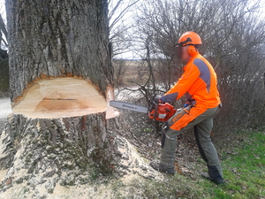
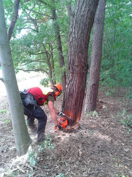
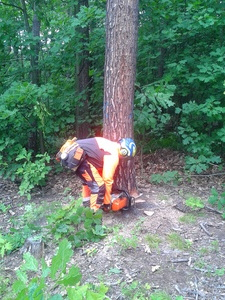
2. Kurs obsługi pilarek spalinowych i przerzynki drewna dla straży pożarnych - kurs obejmuje 40 godzin w tym 25 godz. zajęć praktycznych. Zajęcia prowadzone są przez instruktora zweryfikowanego przez Lasy Państwowe. Kursanci w trakcie szkolenia otrzymują: materiały szkoleniowe, środki ochrony osobistej (z wyjątkiem obuwia), pilarki, paliwo i oleje oraz inne narzędzia wykorzystywane w trakcie pracy pilarką spalinową. Przerzynka drewna prowadzona jest na trenażerach lub w terenie (lesie). Zgodnie z przyjкtym programem w kursie mogą uczestniczyć pełnoletnie osoby, które ukończyły co najmniej szkołę podstawową.
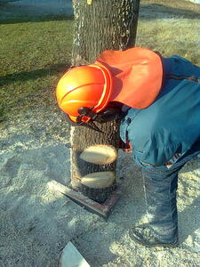


 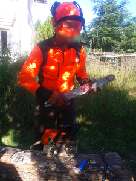
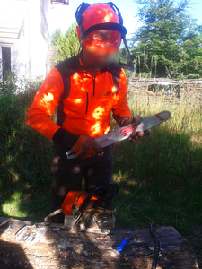
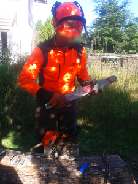
3. Konserwacja drzew i krzewów (ozdobnych, ochronnych, parkowych i przydrożnych) w obiektach parkowo-ogrodowych z elementami pracy pilarką mechaniczną na wysokościach, tzw. chirurgia drzew. Kurs realizowany jest w formie wykładów i zajęć praktycznych, obejmuje 38 godzin. Kursanci w trakcie szkolenia otrzymują: materiały szkoleniowe, środki ochrony osobistej (z wyjątkiem obuwia), pilarki, paliwo i oleje oraz materiały niezbędne podczas wykonywania prac (np.: uprząż, liny alpinistyczne). Zgodnie z przyjętym programem w kursie mogą uczestniczyć osoby, które ukończyły kurs drwala operatora pilarki.
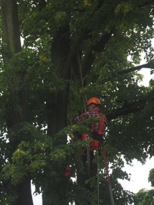
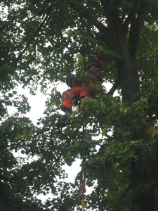
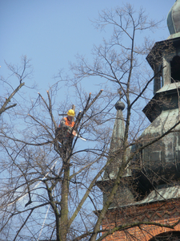
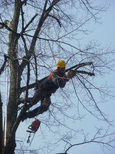
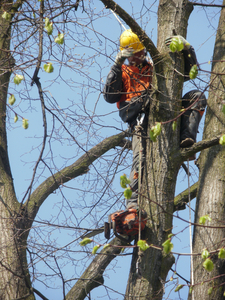
4. Operator ciągnika zrywkowego typu skider - tzn. zrywka drewna ciągnikiem z wciągarką linową – kurs realizowany jest w formie wykładów i zajęć praktycznych, trwa 38 godzin. Kurs obejmuje podstawową wiedzę z zakresu mechaniki technicznej, zrywki drewna oraz BHP przy zrywce ciągnikami typu skider.
5. Szkolenie BHP dla pracowników leśnych. Szkolenie organizowane jest zarówno dla pracowników jak i dla osób kierujących pracownikami.
Istnieje możliwość przeprowadzenia dowolnego szkolenia dla pracowników leśnych jak i drzewnych, (np: tartacznik trakowy) zorganizowanie zależne jest jedynie od odpowiedniej ilości chętnych.
Wszystkie kursy kończą się egzaminem. Kursanci po ukończeniu szkolenia otrzymują zaświadczenie wydane na podstawie rozporządzenia Ministra Edukacji i Nauki z dn. 6 października 2023r. z wyjątkiem kursów BHP gdzie wydawane są zaświadczenia na podstawie rozporządzenia Ministra Gospodarki i Pracy z dn. 27 lipca 2004r. Poniżej zdjęcia z przeprowadzanych kursów: chirurgia i pielęgnacja drzew oraz drwal operator pilarki
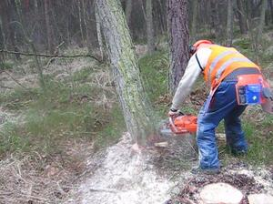
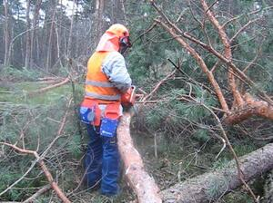
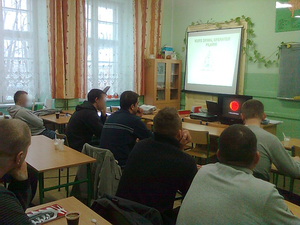